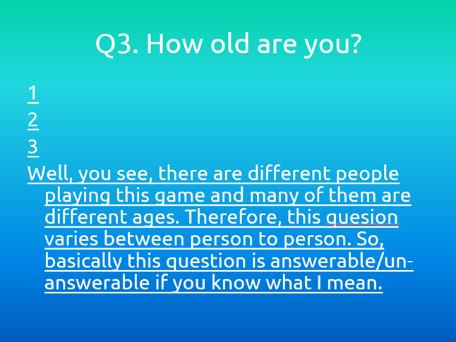
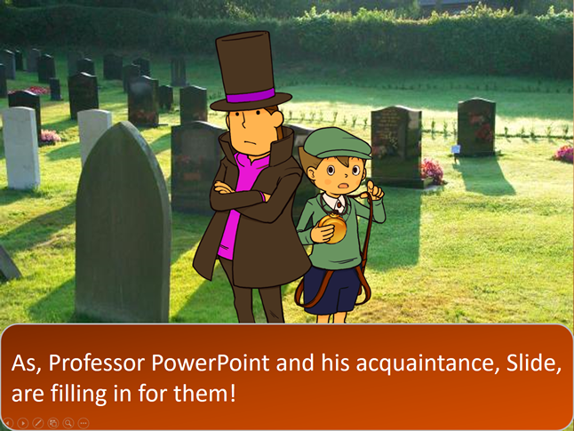
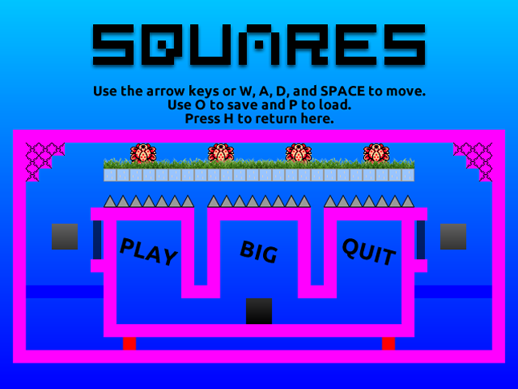

One of the PowerPoint games I used to make. Inspiration obviously taken from The Impossible Quiz.
Another PowerPoint game. The premise is that Professor Layton and Luke have died, so Professor PowerPoint and Slide fill in!
The only GameMaker project decent enough to release. It took 6 months to make and has over 100 levels. It's not very good.
